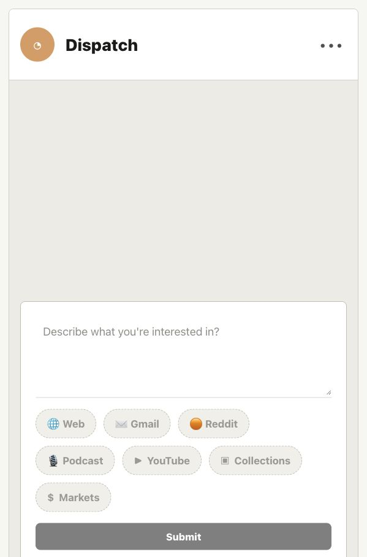
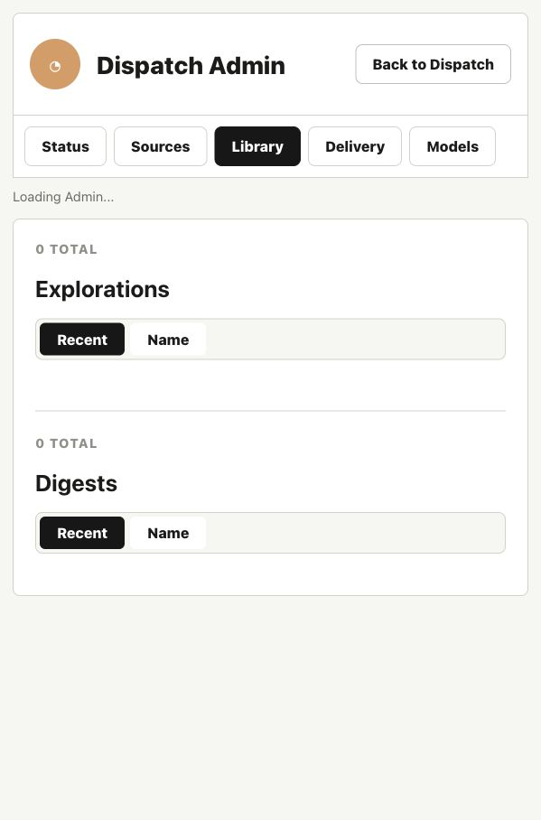
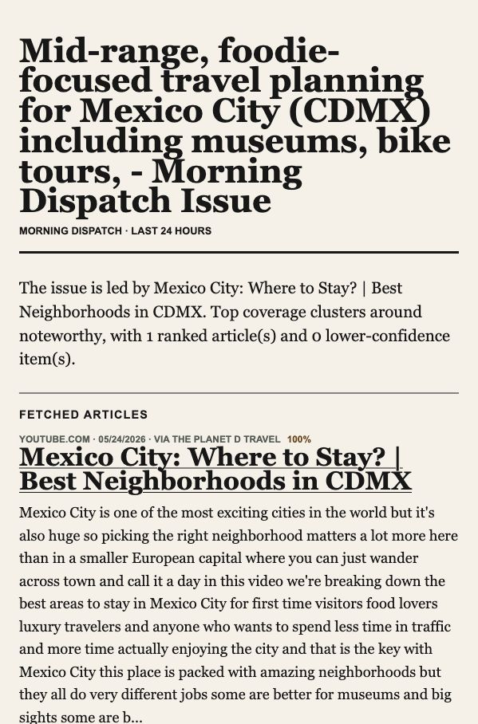

Digest Layout Redesign Handoff
This document describes the current Morning Dispatch user experience and provides a handoff prompt for revising the digest layout.
The screenshots below capture the present app state at 127.0.0.1:8000.
Current Screens
The product currently uses a warm paper surface, black primary controls, rounded source chips, and a newspaper-inspired brief page. The home page and admin are intentionally simple; the digest page is the surface most in need of layout refinement.



Current Product Flow
- Everything starts as an on-demand exploration. The user describes an interest in the composer.
- The AI refinement flow asks questions, then the user confirms scope, depth, recency, exclusions, and sources.
- The app builds a brief from selected sources. Source chips define what the AI is allowed to search.
- After the brief is ready, the user can open it, rebuild it, send it to inbox if delivery is configured, or schedule it as a recurring digest.
- Scheduled digests and one-off explorations share the same brief rendering core.
Current Home UI
- Header: Dispatch brand mark on the left and a three-dot Admin entry on the right.
- Returning state: recent explorations appear above the composer as full-width rounded pills.
- Composer placeholder:
Describe what you're interested in? - Source chips: Web defaults selected; enabled sources can be added or removed before build; disabled sources show as unavailable.
- Current visual language: soft gray background, white panels, black selected states, rounded controls, restrained typography.
Current Admin UI
- Admin is a separate page behind the three-dot menu.
- Tabs: Status, Sources, Library, Delivery, Models.
- Library shows explorations and digests, with independent Recent/Name sort toggles.
- Sources exposes connection state for Web, Gmail, Reddit, Podcast, YouTube, Collections, and Markets.
- Admin should remain functional and calm; it is not the primary consumer experience.
Current Brief UI
- The brief is server-rendered HTML, independent from the React admin/home shell.
- It uses a newspaper-like theme: warm paper background, large serif headline, strong section rules, and a two-column desktop grid.
- Primary left column contains lead story, fetched article sections, lower-confidence items, and source cards.
- Right column contains digest stats and source notes.
- Article cards show source/domain, date, publisher/channel, relevance score, title, AI summary, keywords, and feedback controls.
- Podcast items can open an in-brief modal with player and transcript.
- YouTube items can open an in-brief modal with embedded YouTube player, title, channel, summary, transcript, and open-on-YouTube link.
The brief layout currently feels more like an internal report/newspaper prototype than a polished consumer reading experience.
The redesign should make scanning, reading, source review, and media inspection feel deliberate and premium.
What Should Stay Intact
- Do not change the exploration to digest flow.
- Do not remove source attribution, relevance scoring, feedback controls, or generated-time metadata.
- Keep the atomic brief behavior: the ranked brief renders as a coherent whole after build completion.
- Keep YouTube and Podcast modal review patterns, but the visual design may change.
- Preserve mobile support and avoid overlapping text or controls.
Handoff Prompt
You are redesigning the Morning Dispatch brief layout.
Context:
Morning Dispatch is a local-first personal intelligence app. A user describes an interest, the AI refines it, selected sources are searched, and the system produces an on-demand exploration brief. A completed exploration can later become a recurring digest. Explorations and digests share the same rendered brief template.
Current UI:
- Home is a simple Dispatch panel with recent explorations, a large composer, source chips, and Submit.
- Admin is a separate full page behind a three-dot menu with tabs for Status, Sources, Library, Delivery, and Models.
- The brief is server-rendered HTML with a newspaper-like visual style: warm paper background, large serif H1, two-column grid, fetched article cards, digest stats, source notes, and feedback controls.
- YouTube and Podcast items can open modals for media playback and transcript review.
Redesign goal:
Create a more polished, readable digest/brief experience. The brief should feel like a premium intelligence product, not a raw report. It should help the reader quickly understand the lead, scan sections, inspect sources, and open rich media without losing context.
Primary surface to redesign:
The rendered brief page. Preserve the existing home/admin patterns unless a small supporting adjustment is necessary.
Must keep:
- Article title, source, date, publisher/channel, relevance score, summary, keywords, and feedback controls.
- Digest stats and generation metadata.
- Source notes / provenance area.
- Lower-confidence section if present.
- Podcast modal with player/transcript.
- YouTube modal with embedded player, title, summary, transcript, and YouTube link.
- Responsive mobile layout.
Design expectations:
- Prioritize readability and scanning.
- Give the lead story stronger editorial hierarchy without making the page feel like a marketing hero.
- Make source sections easier to compare.
- Treat media items such as YouTube and Podcast as first-class digest cards.
- Keep controls calm and obvious.
- Avoid nested cards, decorative gradient blobs, and oversized UI that wastes reading space.
- Use a restrained palette with enough contrast between reading surfaces, metadata, and actions.
- Make long titles safe: no overflow, no awkward clipping, no overlap.
Suggested directions to explore:
1. A tighter editorial layout with a lead module, section index, compact story cards, and a sticky or side digest summary.
2. Rich media cards for YouTube/Podcast that show thumbnail/artwork, duration, channel/show, and a clear review action.
3. A better source/provenance drawer or section that explains where the brief came from without crowding the main reading path.
4. A clearer distinction between main ranked items, lower-confidence items, and source notes.
Deliverables:
- Updated brief layout mockup for desktop and mobile.
- Component/state notes for article cards, lead story, source sections, digest stats, YouTube modal, Podcast modal, and feedback controls.
- Any recommended copy changes for labels, section headings, and action names.
- A migration note describing what can change in CSS only versus what needs renderer/template changes.